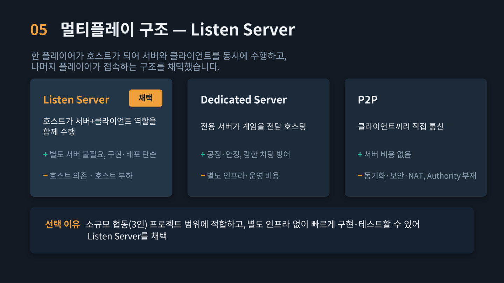
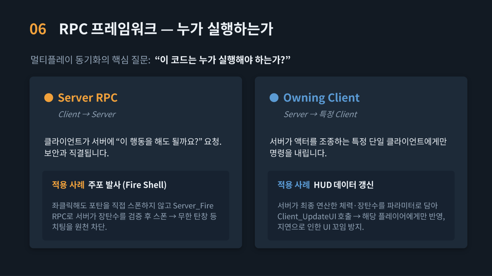
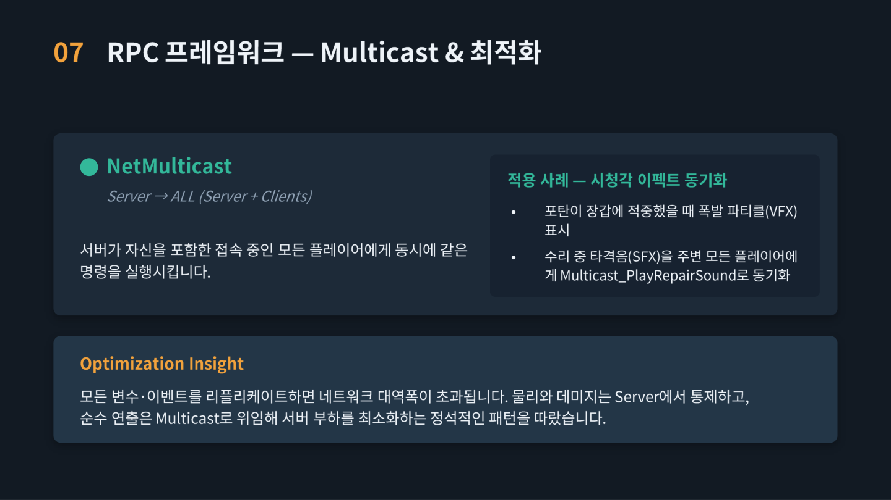
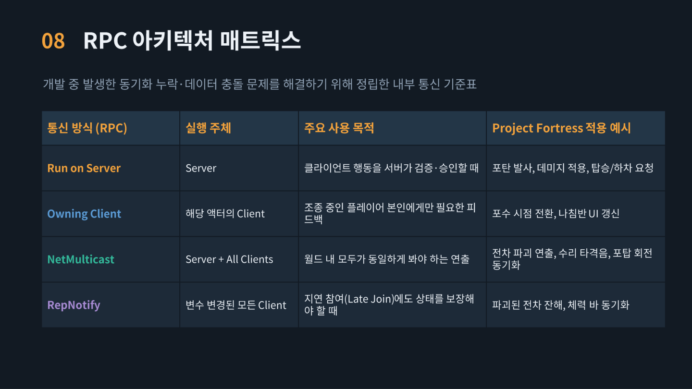
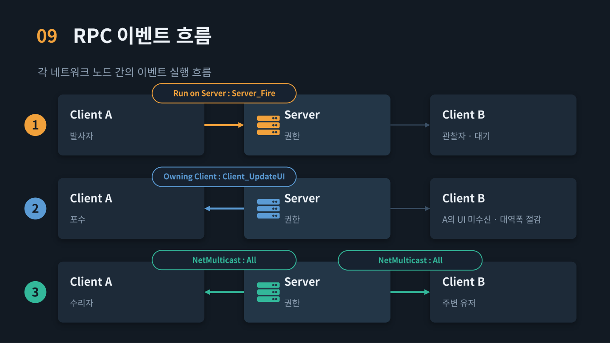
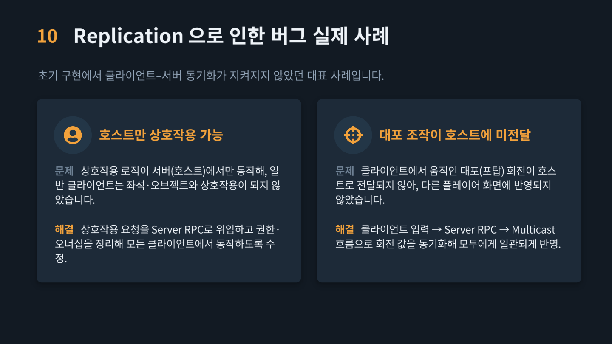
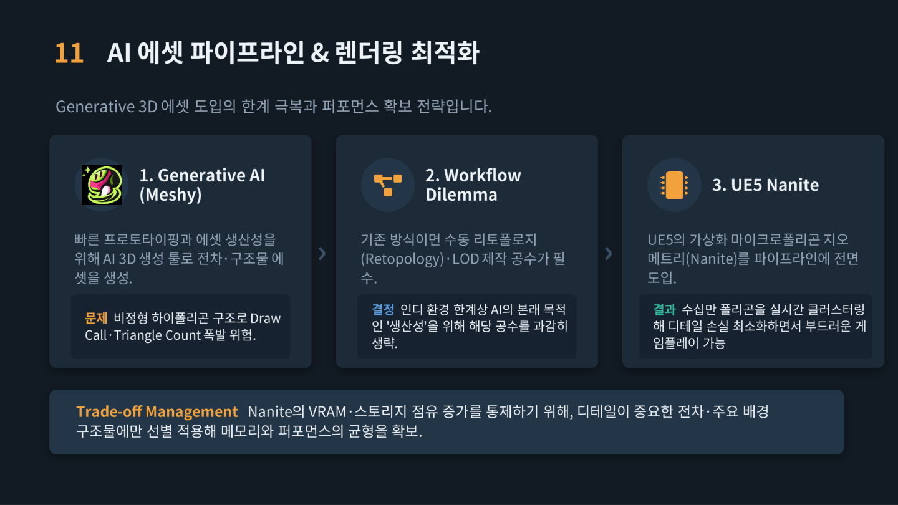
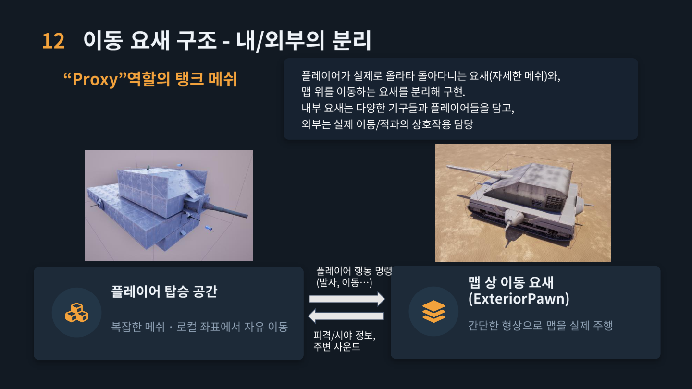

Listen Server 구조 채택
소규모 협동 프로젝트에 맞춰 호스트가 서버와 클라이언트 역할을 함께 수행하는 Listen Server 구조를 선택했습니다. Dedicated Server나 P2P보다 별도 인프라 없이 빠르게 구현하고 테스트할 수 있었습니다.

Server RPC와 Owning Client 활용
클라이언트의 요청을 서버가 검증한 뒤 실행하도록 설계해 무기 발사 같은 핵심 로직에서 치팅을 차단했습니다. 반대로 특정 플레이어에게만 필요한 UI 갱신은 Owning Client 방식으로 처리해 불필요한 데이터 전송을 줄였습니다.

NetMulticast로 연출 동기화
폭발 이펙트나 수리 효과음처럼 모든 플레이어가 함께 봐야 하는 연출은 NetMulticast로 동기화했습니다. 물리와 데미지 판정은 서버에서만 처리해 네트워크 부하를 줄이는 방식으로 설계했습니다.

통신 방식별 사용 기준 정립
개발 중 반복되던 동기화 누락과 데이터 충돌 문제를 해결하기 위해 Run on Server, Owning Client, NetMulticast, RepNotify를 상황별로 구분한 내부 기준표를 만들었습니다. 이후로는 새 기능을 추가할 때마다 이 기준에 따라 통신 방식을 결정했습니다.

RPC 이벤트 흐름 정리
발사, UI 갱신, 수리 이펙트 등 주요 기능이 클라이언트와 서버 사이에서 어떻게 오가는지 다이어그램으로 정리했습니다. 팀원들과 네트워크 구조를 공유하고 논의할 때 유용하게 활용했습니다.

동기화 버그 해결 사례
초기 버전에서는 호스트만 오브젝트와 상호작용할 수 있었고, 클라이언트가 조작한 포탑 회전이 다른 플레이어에게는 보이지 않는 문제가 있었습니다. 상호작용 로직을 Server RPC로 옮기고 결과를 Multicast로 전파하도록 수정해 해결했습니다.

AI 에셋과 Nanite 최적화
Meshy로 생성한 3D 에셋은 폴리곤 수가 많아 드로우콜 부담이 컸습니다. 리토폴로지 작업 대신 UE5 Nanite를 도입하되 전차와 주요 구조물에만 선별 적용해 메모리와 성능의 균형을 맞췄습니다.

탑승 공간과 이동 요새 분리 설계
플레이어가 실제로 움직이는 요새 내부 공간과, 맵 위를 실제로 주행하는 외부 폰(ExteriorPawn)을 분리해서 구현했습니다. 두 객체가 조작 입력과 피격 정보를 서로 주고받는 구조로 동작합니다.
상속 구조의 적 AI와 네트워크 동기화
체력, 피격, 사망, 사거리 같은 공통 로직은 C++ 베이스 클래스(BaseEnemyCharacter)에 두고 공격만 가상 함수로 분리해, 포격병은 계산된 탄도에 랜덤 탄퍼짐을 더해 포탄을 쏘고 자폭병은 멈추지 않고 돌진해 범위 피해를 준 뒤 사라지도록 했습니다. 체력은 RepNotify로 동기화해 클라이언트 체력바를 갱신하고, 사망 연출은 NetMulticast로 모두에게 보여 주되 액터 제거는 서버에서만 처리합니다. 적끼리의 오인 피해는 무시하고, 장갑 분류(중장갑·경장갑·자폭병)를 두어 적 종류마다 받는 데미지를 다르게 할 수 있게 했습니다.